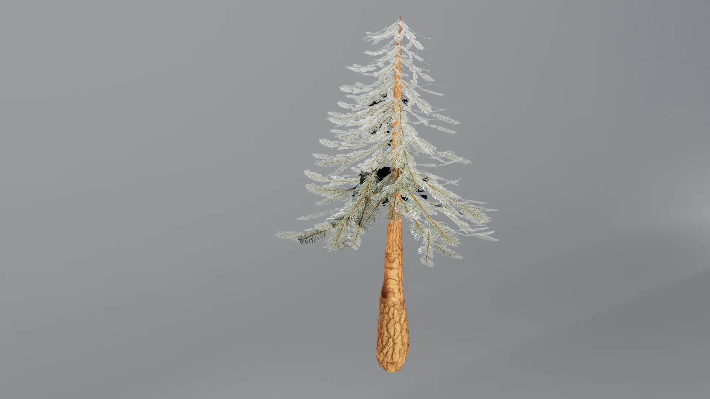
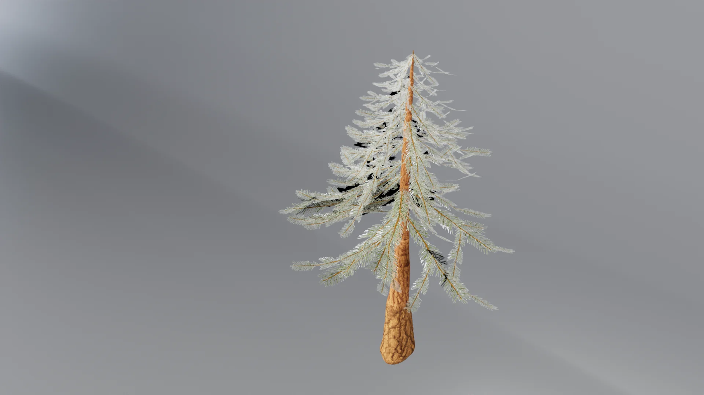
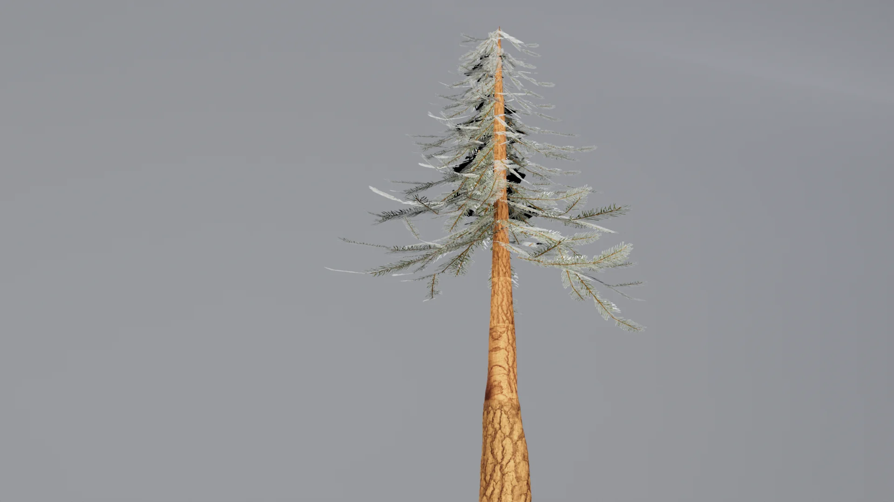
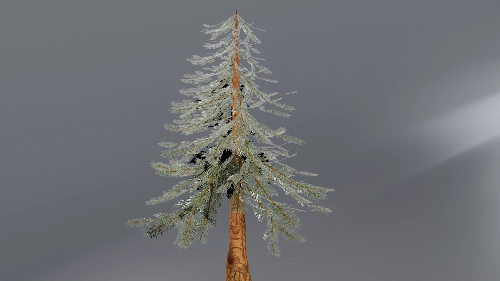
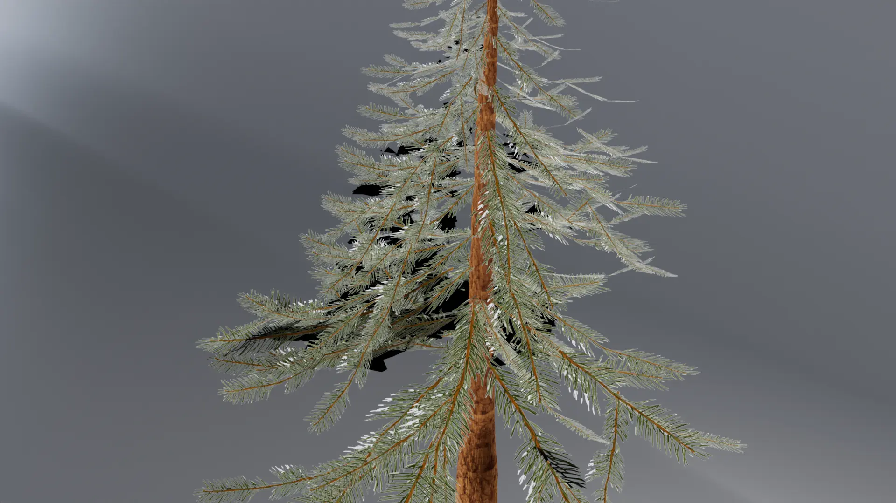
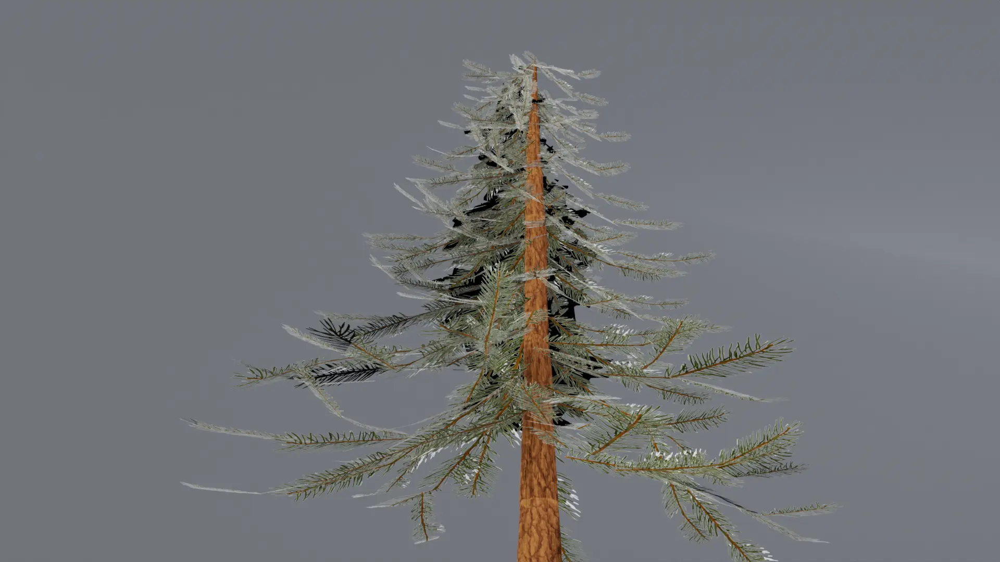
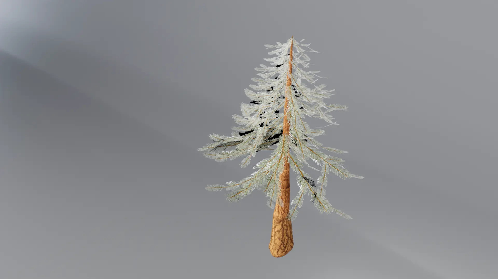
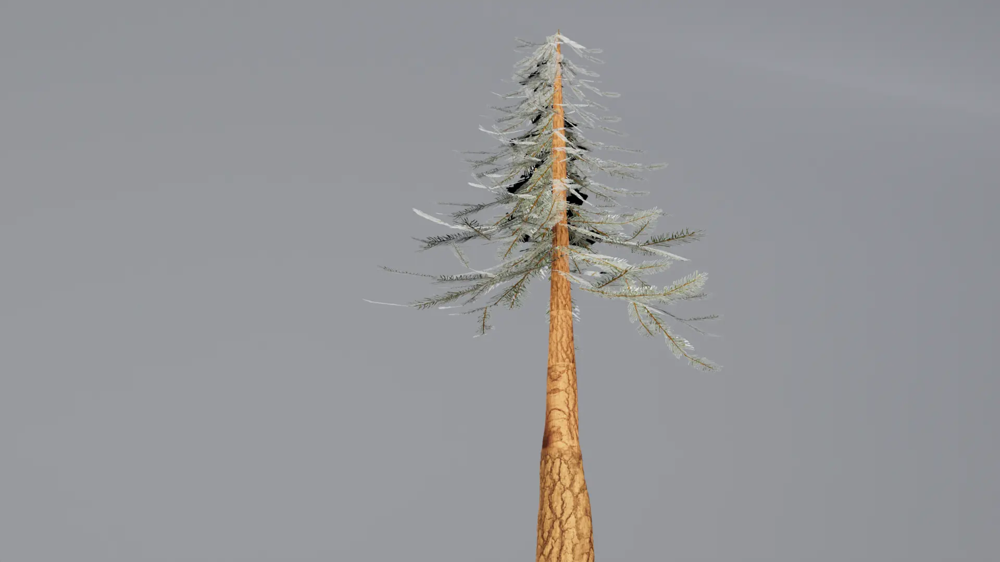
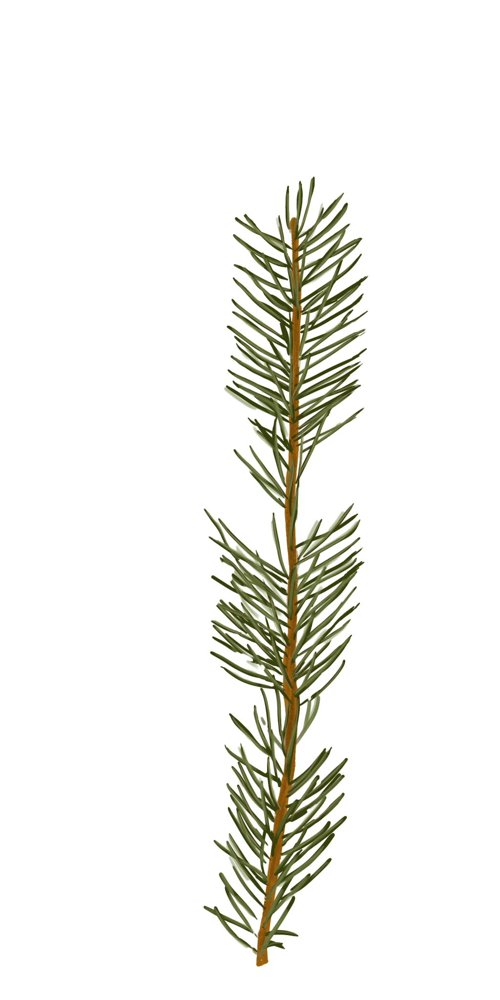
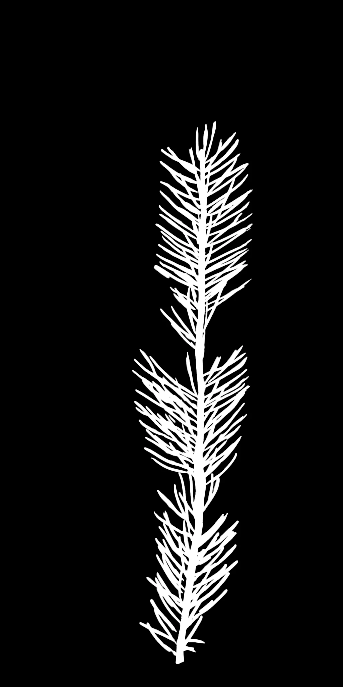

Project type:
Organic Vegetation Texturing project in Photoshop and Maya.
Project description:
For this project, I brought a pine tree to life as part of a broader effort to develop my skills in 3D digital texturing, shading, lighting, and UV mapping. This tree is a key element in a 3D environment I’ve been gradually building throughout the semester. I approached the design by creating my own reference and style, viewing each individual asset as a component of a larger scene.
The primary goal of this project was to gain hands-on experience with 3D texturing tools. Having previously worked with 2D textures, I expanded my knowledge by painting directly in 3D using sculpting and texturing software like Mudbox. I also explored the use of various texture maps, including bump maps, normal maps, and displacement maps, to achieve greater surface detail and realism.
Additionally, I learned how to manage workflows between different software and create clear turntable renders. UV mapping was a key focus—particularly unwrapping and organizing UVs efficiently to ensure clean and accurate texture application across the model.
Date:
February 10 - 23, 2025
Role:
3D sculptor and Texture Painter.
Project highlight:
Renders from different angles:








Textures:



Reference:

Reflection:
This project helps me learnt how to paint pine tree branches and the placement of pine branches more organic. The pine branch is a plane with painted texture and an alpha map to make it look like a branch. I also added lattices to the plane and bend them to give the branch a more organic curve.
Since this is my second attempt at modeling the pine tree, the tree turns out much more natural. In the first attempt, the pine tree has too many polygons because the pine leaves are geometry and because I added too many leaves.
I found it challenging to make the details of the obsidian stand out because the rock is dark.